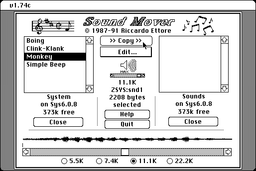

Download
soundmover174.zip (49K) Sound Mover 1.74 repackaged into a zipped hfs disk image and checksum file. The disk image can be mounted with Mini vMac.
soundmover174.sit (57K) Sound Mover 1.74 in the original format.
copyright: Riccardo Ettore
mod date: Oct 7, 1991
license: shareware
Like Font/DA Mover, but for sound resources. Also can perform some format conversions, and some limited editing.

Sound Mover 1.74 is just an update of the main application. The Sound Mover 1.70 Package contains a few of other utilities and more documentation:
soundmover17.zip (86K) Sound Mover 1.70 repackaged into a zipped hfs disk image and checksum file. The disk image can be mounted with Mini vMac.
soundmover17.cpt (90K) Sound Mover 1.70 in the original format.
If you find these downloads useful, please consider helping the Gryphel Project, which hosts them.
Here are the md5 checksums for the downloads, signed with Gryphel Key 5:
--------- GRY SIGNED TEXT --------- 926667d91f042296f082a38927cd0292 soundmover174.zip 9833e7c98165880f58d39aa5077a6c8f soundmover17.zip 7eae18d6a0709145e08391524068176d soundmover174.sit 145215408f4a0a58f6bfe867e354ecac soundmover17.cpt ------- BEGIN GRY SIGNATURE ------- Gry/4Xa8CFcUzxdN/BxnBm2GSCpJtDsR/x4wclMsGWm5J8qPU5pu3fW3maB2JD97 HIRjkKL++gCyPuzYYaB/Xa1wYBxdBahiNkJz6BB0cm6mY9uLUx4ZZE9mMv14k7qt EkAwj7RIvcoCaMKfV3o50O6yiWJXdOP37JP/Q2zHU8mgIdywtALWlg/2KKcWnvLA -------- END GRY SIGNATURE --------